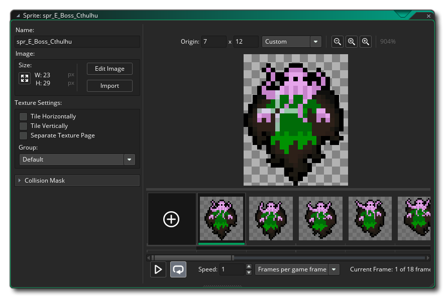
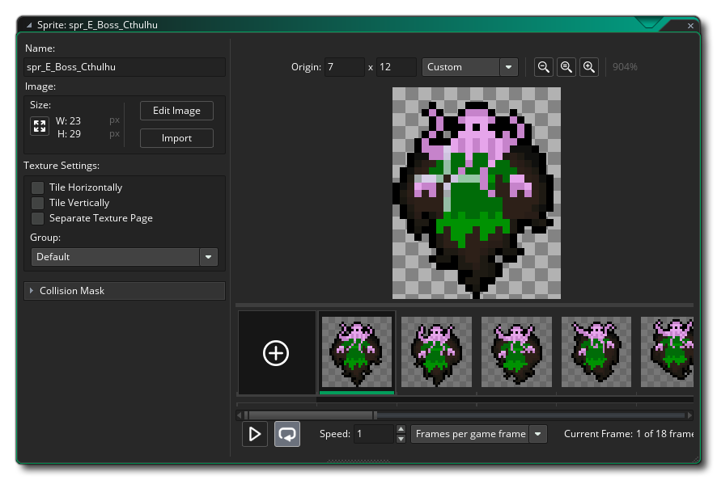
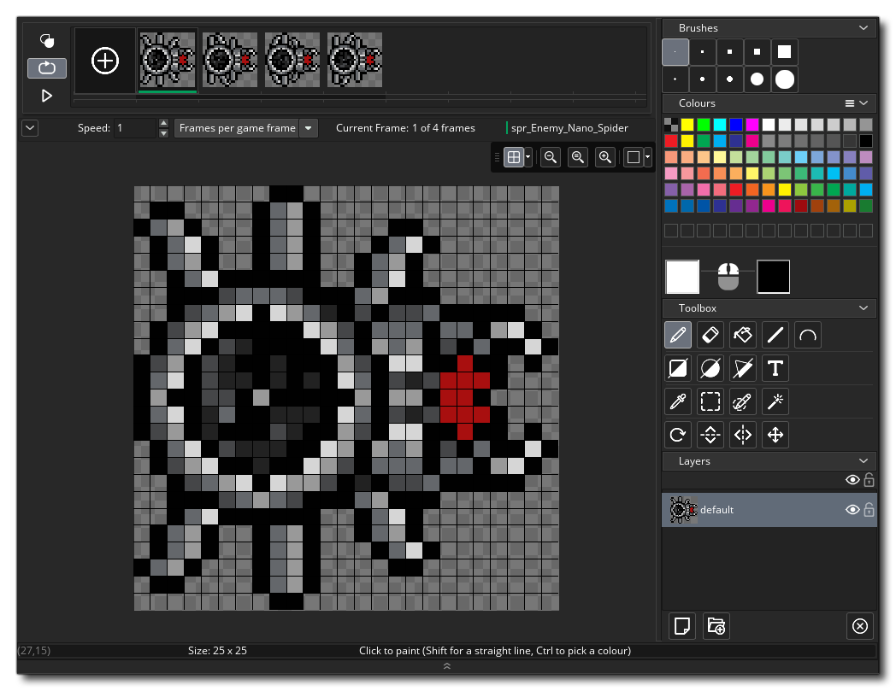
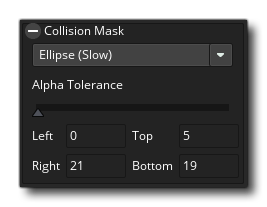

We'll start this section of the Quick Start Guide by looking at sprites which are generally one of the first things you'll need when making any project in GameMaker Studio 2. As explained in the section on Resources, a sprite is an image that can be animated (although it doesn't have to be) and then drawn to the screen. In general a sprite will be associated with an object, but you can draw sprites on their own, either from code or in the room editor Asset Layer (more on this later). You can also create a sprite to be used as a tile set, but we'll explore that option later too.
When you create
a new project from the Start Page,
your resource tree will only contain empty folders for the
resources you may need, so you need to right-click
 on the sprite resource folder and
then select the option Create. This will create a new sprite
and open the sprite editor for you (if the sprite editor does not
open, simply double-click
on the sprite resource folder and
then select the option Create. This will create a new sprite
and open the sprite editor for you (if the sprite editor does not
open, simply double-click  on the new resource): 
on the new resource): 
As you can probably see, the top left of the window has a field for the "Name" of the sprite. All sprites (and all other resources) must have a name given to them so that you (and GameMaker Studio 2) can identify them easily, although you should note that this name is really just a variable which holds an ID value that "points" to the resource, in this case a sprite. It's best to give each sprite a descriptive name so that you can identify at a glance whether a particular resource is a sprite or an object or anything else, and many people do this by prefixing or suffixing the resource with the letters "spr" - for example, "spr_Ball". Note that resource names are limited to using only letters, digits and the underscore symbol "_" in a name of a sprite (and any other resource) all resources must start with a letter, not a number.
The other features of the sprite editor we'll discuss at the end of this section, but first we need to explain how to draw a sprite. This is done in the Image Editor. The image editor is a very powerful tool for creating the graphics in your game and is opened by clicking the Edit Image button.  We won't go into too much depth about the tools available here - for that we have the Image Editor section of the manual - but briefly you have:
- At the top left, the frame view - this shows the frame(s) of your sprite and can be resized using the magnifying glass icons.
- In the centre we have the drawing canvas - this shows the currently selected frame ready for drawing and you can use the middle mouse button
to pan around and the mouse wheel
- At the top right we have the basic brushes - here you can pick the brush for drawing, and any custom brushes will also be added here
- At the middle right we have the colour picker - here we can choose the colour to use for the left and/or right mouse button, since you can draw on the canvas with one or the other buttons at the same time
- Just below the colour picker we have our tools - these are the different drawing tools, including the brush, flood fill, masking and shape tools. Note that some of the tools are split diagonally and will draw either outlined or filled shapes depending on which side of the line you click on to select them
- At the bottom right we have the layers view - like many other drawing tools out there, you can create different layers to draw onto, permitting you to experiment with position and colour etc... without having to worry about destroying what's underneath
Draw something into the image editor and take some time to play with the options, then when you are ready close the workspace (which will save the image) to take you back to the workspace with the sprite editor in it. We'll discuss a few other features of the sprite editor that are important to know when just getting started...
The first thing you need know is how to set the origin
for the sprite. The origin is simply the point that will be used to
"anchor" our sprite within the room, and in this case we want to
set it to the centre. So we click  on the
from down menu for setting the origin and select "middle centre":
on the
from down menu for setting the origin and select "middle centre":
 You'll see the origin cross-hair in the preview image move to the
centre of the sprite. Note that you can place the origin anywhere
you wish by simply clicking
You'll see the origin cross-hair in the preview image move to the
centre of the sprite. Note that you can place the origin anywhere
you wish by simply clicking  on the preview image, and you can
also manually input the origin position by adding values into the
x/y fields at the top.
on the preview image, and you can
also manually input the origin position by adding values into the
x/y fields at the top.
Another important thing to do know is how to set the collision mask for the sprite. The collision mask is the area that GameMaker Studio 2 will check to see if there has been a collision, and by default this is set to rectangle (which is also the fastest to resolve). Note that you can set the detection mode for the bounding box to be either automatic (the default value) or manual. If you choose manual you will be able to set the bounding box values left, right, top and bottom. 
Any type of collision mask other than rectangle will be slower to resolve, but when making a small, simple game it's not usually an issue. You can close the sprite editor now as we are going to move on to discuss Tile Sets.